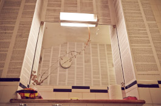
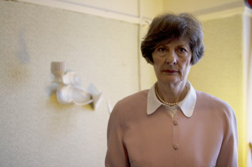
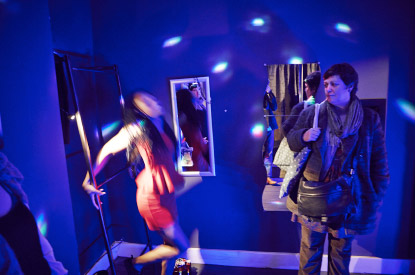
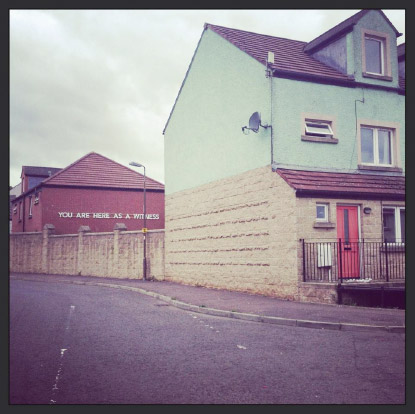

Working from experience: Our Glass House
22nd Jan
2014
by Rhiannon

The day Evie told me about her idea (to stage a performance about Domestic Violence in a house) we were in a car with her son taking him to the sea for the first time. Although we were friends, I’d never told her about my past. My way of dealing with the abuse my family suffered was to pretend it never happened and just carry on. I grew up feeling deeply ashamed of what was going on in our house, I never really told anyone because as a kid I just wanted to be from a normal family.
When she told me about the abuse her neighbour had suffered it all came flooding back. I told her about the abuse we suffered at the hands of my mothers second husband, how as a family we had to escape to a refuge and what it felt like to be a child in a house continuously under threat. I admitted to her about my own adult relationships how I had fallen for someone who in turn had became abusive towards me and how I had managed to escape and turn my life around.
From early on we both knew that ‘Our Glass House’ would have to be based on interviews with people who had experienced domestic abuse. Such a complex and taboo subject could only be defined by the people who knew first hand the tactics and implications of living under the pressure of a perpetrator.
The first person we interviewed was my mum. It felt safe to start with someone we knew and trusted. As mother and daughter we were always very open about what was going on in our house, our relationship has always been incredibly strong and through the years we’d look after each other through the difficult times. It wasn’t strange to hear her answer the questions we’d prepared, I knew most of the answers as well as her. What it did help me to understand was the reasons for some of the decisions that she had made.
We got in contact with a charity called Survive, and were lucky enough to meet an incredible group of women that were happy to share there experiences. Each person different from the next with only too familiar stories of what had happened to them at the hands of partners. What came across most of all from meeting these women was there incredible sense of courage and dignity. What resonated the most was that nearly all of them had left to protect their children. What amazed me the most was how many people we knew that began to step forward to share their experiences. It felt mad that I should be so ashamed of my past especially as it seemed to happen to so many people. In the end I asked Evie to interview me about my past relationship, it felt hard knowing her and having to bring up what I’d rather forget. It was hard to get the words out; a lot of what I wanted to say wouldn’t come. I felt relieved to get some of it out, it was good to be able to say to myself ‘ok, it did happen and it could happen to any one of us, you’re not an idiot or weak because it happened, you’re just a normal person’.
We knew we had to stay true to the people we interviewed and their stories. From day one of our rehearsals we used them to develop the set, characters and action of the show. Using a technique called verbatim, the actors listened to the interviews in headphones at the same time as repeating what that person was speaking word for word. It was incredible to watch our research; my mum’s voice come out through another women’s mouth and it reinforced my belief that this can happen to absolutely anyone. For the actors it was invaluable, hearing the matter of fact way that the survivors spoke about the abuse they had suffered. This tone of delivery would be the way that the actors would deliver the performance.
I have to admit I did find it difficult at times creating something that was so personal to my own life. Coming into the house the show was staged in and creating that tension that I remembered so well from growing up. Working with the child that my story had been worked into and hearing my mums words resonate through the house. I also found it cathartic, watching the world we created from all these experiences come to life and knowing that it would help people understand a topic that was so taboo.
Going to Edinburgh with the show was when it finally became clear to us that this was more than just a performance. It was a campaign to get communities talking and officials taking notice. When the chief of Scottish Police came to the show, it felt like things had the potential of change. When I was young it felt like the Police had no power to do anything, they would come, take him away and he’d be back in the house in the morning, but in Edinburgh they seemed to take domestic abuse as a serious crime, so much so that a case would be classed as murder prevention. This was a real breakthrough for me, it wasn’t that long ago that Joanna Williams a women from St. Mellons, the estate I grew up in Cardiff, was murdered by an ex partner after the Police had failed her.
Watching the show grow, adapting to each community and meeting people who have had similar experiences along the way has made me realise that when you experience Domestic Abuse the best thing to do is to tell someone. When you experience domestic abuse you literally feel as if the world outside is a million miles away, I remember feeling so isolated from my friends and family and that became as much as a problem as the abuse itself. At the Edinburgh Fringe last year, when me Evie and Aisha received a Special Commendation Amnesty Award I remember thinking to myself, five years ago I would never imagine myself making theatre again, let alone receiving an award.
Our Glass House has made me a stronger person. It empowered me to have the strength to tell my story and share the experiences of many others. What I would say to other theatre makers is that every one of us has a story to tell, so be brave and create dangerously. Theatre is a powerful tool; don’t be afraid to use it.
Post-show discussion: ‘Our Glass House’
11th Dec
2013
by Evie
Every performance of ‘Our Glass House’ was followed by a post-show discussion. Here are some thoughts, messages and things we often talked about in them.

'You are here as a witness'
Through taking ‘Our Glass House’ to different communities in very different areas, this message has become more and more important to us – featured in our set design, emblazoned in large letters outside the house. We all have a responsibility to each other, to hear what’s going on through our neighbours’ walls or behind the door of a house as we walk down the street. If you hear abusive language or banging, shouting, screaming- you can call the police. The police need evidence to act. We can’t expect a service or organisation to fix domestic abuse. Attitudes need to change on a wider social level. An amazing break-through for us was after our Edinburgh launch when we had a post-show with ScotlandChief Police Commissioner and other heads of service and the Head of NHS Edinburgh said that with the audience being so close to the action, the show had made him think of how organisations could empower communities to take action. A shocking statistic that galvanised this message, is that the London Met Police received 120,000 calls last year about domestic abuse and only 4% of these were from neighbours.
We really distrust the use of the word 'victim'
We need to re-think our language around domestic abuse. No-one we’ve met in our time interviewing people have ever looked or acted like a ‘victim’- quite the opposite, that’s why there is no crying in the show, everyone we met was matter of fact and had a great amount of understanding and strength from their situation. Who do you know who would like to be called a ‘victim’? We think this label diminishes someone’s person-hood and is prohibitive in someone coming forward, they don’t want people to know this was happening to them or have that label of a ‘victim’ put on them. Who would?

Survivors of domestic abuse are strong
A fantastic woman from Edinburgh Women’s Aid spoke to us about the STRENGTH that a person experiencing domestic abuse demonstrates, that to maintain and live with a perpetrator and the never-ending rules takes an enormous amount of strength. The people we interviewed had a lot of hope and belief in their abusive partner, seeing the perpetrator’s capability to be caring, charming and loving some days, and it was this potential that the other partner would invest in. The characters within ‘Our Glass House’, and the people we interviewed all left with nothing, so many people spoke about leaving with their baby and their purse. Or their phone and a carrier bag. Sufiya, the Punjabi character left with a bin bag full of red cloth that trailed behind her as she went down the street. Seeing Helen, the character in her 70’s leave her grand living room, with absolutely nothing was a very powerful feeling as was watching pregnant Nicola shouting up at the house, sometimes in the snow or hail. People who leave an abusive environment have an extraordinary amount of COURAGE to leave with nothing, with often no one to help (because of the compounding factor of their isolation) and not knowing where they will go. We wanted to celebrate this with the endings of our show; everyone leaves with nothing- except their resolve.
Domestic abuse should not be taboo
We should not be afraid to talk about domestic abuse, whether that’s asking someone if their partner is controlling or talking about our own experiences. Domestic abuse is a crime perpetuated by its silence- silence is one of the most powerful weapons a perpetrator has- it emboldens the crime. We should not be ashamed if it has happened to us - it’s for the perpetrator to feel ashamed of. When researching and making the show, the question outsiders asked the most was ‘Why doesn’t she leave?’ not ‘Why does he hurt her?’ We put so much emphasis on the woman or man experiencing domestic abuse instead of looking at the perpetrator and their actions. This is reflected in our sentencing within court, our attitudes in the media and on the streets, the way that when a woman is murdered by her partner this is not reported as ‘domestic abuse.’ We need more perpetrator programmes to help change attitudes so perpetrators don’t go on to another abusive relationship or to commit homicide. In Scotland, the police have re-categorised domestic abuse as murder prevention and this is how serious we should all treat it.

Domestic abuse can happen to anyone
That’s why the show features characters from very diverse backgrounds, gender, age, race, religion and class. In part this also demonstrates that perpetrators come from all walks of life. Often a person experiencing domestic abuse is made to feel that their background was a contributing factor (you’re too poor, too posh, not man enough, not woman enough), based on our research with ‘Our Glass House’, it’s clear, domestic abuse can happen to anyone. There is no one face of domestic abuse, it doesn’t just happen to ‘weak’ people, often a perpetrator will find someone who is at their strongest, their brightest and will find extra gain in diminishing this person’s sense of self.
Domestic abuse is a young person’s issue
Amongst all age groups, DA is on the rise the most amongst 16-25 year olds- the issue is not going away, it’s not an issue of the past. Throughout the duration of our 120 shows in five different cities, most disclosures (of people coming up to us after the show and saying ‘that happened to me’) came from young women, often they had never told anyone before. Many young women don’t consider being forced to have sex by their boyfriend to be rape. That’s why we made the conscious decision that Kayleigh never, ever sees the darkness in her situation – when she talks about ‘They’re inside me. Both ends’ in the toilet, she is on top of the world ‘fucking and floating’ outside her self. As an audience, we can see Kayleigh’s in trouble but Kayleigh is not yet admitting it to herself.

Women can be abusive and controlling too and men shouldn’t have to ‘put up with it’. No one should.
Our decision to have a man in the show who was experiencing domestic abuse from his girlfriend came from a very real place, and us seeing violent women in our own lives as well as the scores of interviews we conducted. Yet, even then, a senior Domestic Abuse worker in Bristol felt that the male character’s partner should be a man – because of course domestic abuse happens in gay relationships too. For us, this would have been too much of a cop out – to say that only men are abusive. The gender roles that can make a woman stay in an abusive relationship are also the ones that can make a man stay – that he feels he has to be macho, to be the provider, that he should withstand the abuse. With ‘Our Glass House’, we wanted to understand and show the reasons people stay - the first forty minutes of the play explores this complex reasoning – but we also knew everyone had to leave – that everyone we interviewed left – that communities, neighbours, friends, family should be empowered to support people to leave, that people make new lives, even with nothing and their person-hood, their individuality that often a perpetrator will attack, is the most important thing.
Audience Engagement, Bradford
18th July
2013
by Evie
With so much talk of ‘who sees art’ lately, I wanted to write about Common Wealth’s mission statement, ‘to make theatre for people who don’t usually think it’s for them’ and how Our Glass House achieves this. I’m going to write about our Bradford show because that’s where the play really did this, it’s where I’m from and where I couldn’t wait to take the show since we first staged it in Bristol.
The play ends with action spilling out on to the street, the people on their street who live in the houses opposite, open their windows, come outside their doors in the snow and applaud the end of the show with the rest of the audience. A car of boys drive past, music blaring and stop their car outside the house as the last scene plays out, they roll down their windows and lean out. They turn down their music and watch and listen to our pregnant character shouting up at the house ‘I will not be with a man who teaches his children to hit, beat, bite, throw.’ The boys in the car watch to the very end and applaud with the rest of us. From that point on for the rest of the run, these lads and their extended group of mates, rock up five minutes before the show begins and ask if they can come in, we always let them. Our next-door neighbour who keeps ferrets and lives with his two twenty-something nephews who get stoned EVERY day with all their mates from the early afternoon, they all come. And all their brothers, their cousins, their mates from the rest of the estate. And they don’t do what we’d expect, they don’t stay with the man who’s a victim of domestic abuse, or the teenage girl who spends the first ten minutes dancing with her pole, you find them leaning against the wall listening intently to the woman who only speaks in Punjabi, staying there for a long time, working it out, really entering another world. We ask them after ‘have you been to the theatre before,’ they laugh. And then they say they want to see more, to be in some, to be actors. They keep coming back; some see the show three times.
Then there’s the sixteen year old girls, who first come in to see the show because it’s snowing outside and they’ve been on the street for hours freezing in their t-shirts. They come in giggling as if they’re trespassing and then they quickly realise, this is for them. They find the teenage character Kayleigh in her room and they stay with her, first glued to the wall, and then gradually make their way to her bed, they sit on her bed in that room for so long that they become Kayleigh’s mates. The ones who Kayleigh mentions in her text, who sit by and keep a distance from the abuse and just see it as a drama, or as one of the young women we interviewed in the making of the play said ‘my mates just thought it was like an episode of Eastenders.’ These three teenage girls who come three times, we finally pin them down to fill out a feedback form, on the question ‘How often do you go to the theatre?’ One writes ‘None. I never.’
There’s many more stories, like the women, our neighbours from the street, who when we went round and said we’re doing a show on your street, in a house about domestic abuse, every one of them said ‘Well I’ve been there’. Every single woman on the street we spoke to said this. And one of them said, ‘I’m completely behind you, do you need any props, I’ve got plenty of crap upstairs’ and then sent their daughter round to help with the set build. Or the men in their forties, who would approach me and Rhiannon as we went to meet audience at the pub and said ‘are you doing this Our Glass House thing? I’ve got a mate who’s hitting his girlfriend and I don’t know what to do anymore.’
So, how did this happen, that an experimental piece of theatre suddenly and directly connects with a whole estate on so many levels? Bradford Council made the show free straight away, which of course, helped massively, they bought all the tickets straight off and it became free. Also, we were working on Thorpe Edge, not the roughest council estate in Bradford by any stretch, a normal council estate in Bradford where everyone we spoke to who came from the estate had never seen any theatre in their lives. Of course, there’s not masses of theatre to see in Bradford but the concept seemed so far removed from people’s lives that they literally would laugh when we asked them. I think it helped that as a kid, my family lived on Ravenscliffe, the estate next door to Thorpe Edge and that Rhiannon grew up on an estate all her life, that we weren’t far removed from the people we were meeting and talking to, that we didn’t consider them far removed.
Which is why I’m massively grateful for support from the Arts Council, Common Wealth had staged three large-scale productions before and never received any funding at all, we’d never even tried, we just thought funding wasn’t for us, in fact we were terrified by the thought of it, the thought that there was all these men in suits judging us. Us with the wrong accents and with no connections and no big names behind us. It turned out the guy from the Arts Council was a bit of a scruff with wild hair like a fraggle. We couldn’t believe that. His name, when it arrived on our letters had been a massive statement of authority, we were too scared to ring him for a year. It seems mad looking back on this, but when you’ve grown up thinking ‘that world isn’t mine,’ it’s very hard not to be afraid to enter it.
We’re taking Our Glass House to Edinburgh for the Fringe now, we’re going to a council estate called Wester Hailes, during our preparations, when we’ve told theatre people in Edinburgh that we wanted to find a house there to stage the show in, some have literally said ‘you don’t want to do it there.’
We finally found our house and visited this notorious Wester Hailes, the director of WHALE, the community arts centre there said she thinks this will be the first time ever that something has come to Wester Hailes that is also part of the Fringe programme. Everyone we met in Wester Hailes was lovely and really interested in the show. Wester Hailes was green and friendly. We really want to do the show there.
(Our Glass House will run in Wester Hailes from the 13th-25 August. Tickets will be FREE. We go up there mid July and will be talking to every local resident we meet, we won’t be flyering on the Royal Mile, we’ll be flyering doctor’s surgeries, corner shops, pubs, community centres, youth centres and our neighbours houses.)